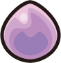

From Zero to Hero
Out of all my favorite held items, the Eviolite has had the biggest impact on the competitive scene. The Eviolite was introduced in Generation 5, and its effect was a big one. It multiplied a Pokemon's Defense and Special Defense by 1.5, but only if that Pokemon was capable of evolving. For example, Pikachu would get the 1.5x boost to its defenses because it can still evolve into Raichu. On the other hand, Raichu would not get the boost because it cannot evolve.
The introduction of the Eviolite actually made some non-fully evolved Pokemon better that their fully evolved versions. An example of this would be Porygon2. Porygon2 can still evolve into Porygon-Z, so it gets the Eviolite boost, raising its Defense stat from 90 to 135, and its Special Defense stat from 95 to 142. It can't do as much damage as Porygon-Z, so it slowly chips away at opponents while staying healthy with moves like Recover.
